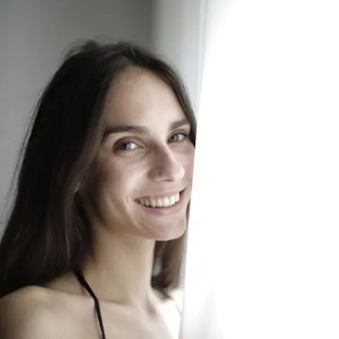
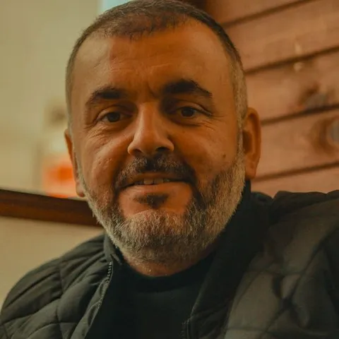
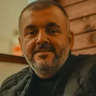

Every teacher is a native speaker with at least seven years in the classroom.
Portuguese · Spanish
From São Paulo · 7 years
“Portuguese is a party in the mouth. Let us enjoy it together.”
Ana teaches both Brazilian Portuguese and bridging classes for Spanish speakers. Her classes are known for music and laughter.

French
From Lyon · 9 years
“Pronunciation is confidence. Once you sound good, you speak more.”
Camille trained as a drama teacher before moving to London. Her classes use poetry, film clips and tongue twisters to make French sounds feel natural.
Italian
From Bologna · 8 years
“If your Italian class does not make you hungry, something is wrong.”
Giulia combines language teaching with her love of cooking. Expect recipes, regional dialects and plenty of conversation over coffee.

German
From Hamburg · 14 years

“German is more logical than people think. I will show you the pattern.”
Jonas has taught German for business and exams for fourteen years. He draws a lot on the whiteboard and promises that cases are not as scary as they sound.
Spanish
From Madrid · 12 years
“Language is a bridge, so I make students cross it on day one.”
Marta grew up in Madrid and has taught Spanish to adults for twelve years. She is known for lively classes full of role-play, and for patiently untangling the subjunctive.
Arabic
From Beirut · 13 years
“The script is a beautiful puzzle. Let me hand you the first pieces.”
Omar teaches Modern Standard Arabic alongside Levantine dialect. He also runs calligraphy workshops where students write their own names.
Mandarin
From Chengdu · 11 years
“Tones are just music. Everybody can learn music.”
Wei is a former musician who teaches Mandarin tones with songs. She also leads the school’s Lunar New Year celebration every year.
Japanese
From Osaka · 10 years
“Small steps every week. Soon you are reading a menu in Tokyo.”
Yuki moved from Osaka ten years ago. She builds Japanese up gently, starting with sounds and scripts, and finishing every class with a game.